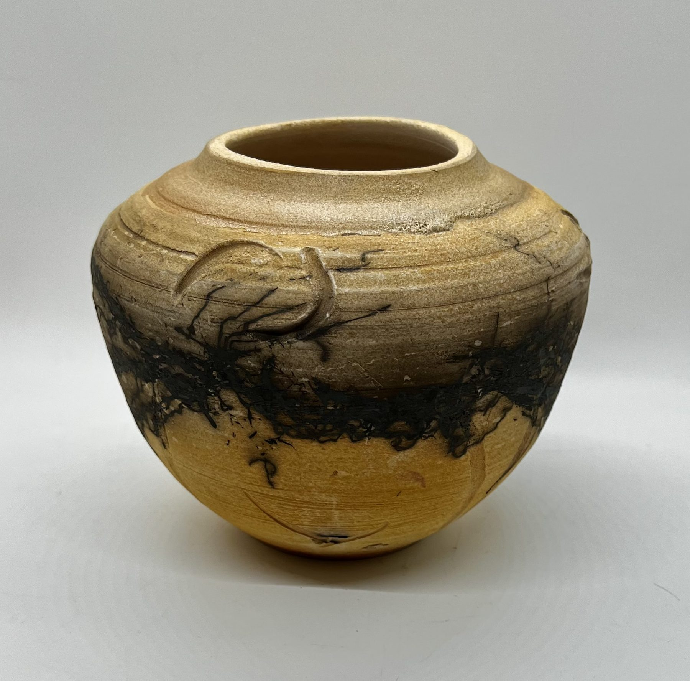

The Artist Behind the Clay
A Life Shaped by Clay
There is something extraordinary about creating beauty from the earth.

The artist
For Stephanne Martin, pottery is more than an object to be admired. It is an artistic language, a way of expressing what words sometimes cannot.
Clay begins without a story. Through the movement of the hands, the turning of the wheel, and the transformation of fire, it takes on character, texture, and form.
Some pieces are quiet and understated. Others are expressive, unexpected, and full of movement. Each carries the unmistakable individuality of something made by hand.
Stephanne’s pottery invites us to appreciate the beauty of ordinary moments: the warmth of a favorite cup, the graceful curve of a vessel, or the way light moves across a glazed surface.
Because art does not always belong behind glass.
Sometimes, it belongs in our hands.
Art shaped by hand, meant to be felt.
Statement
Pottery & Poetry
The Poetry of Earth and Fire
Pottery and poetry have more in common than we might imagine.
A poet begins with words. A potter begins with clay.
Both search for rhythm, balance, and meaning. Both transform something ordinary into something that can make us feel.
In pottery, a curve becomes a sentence. A texture becomes a memory. A glaze becomes a moment of color, captured forever by fire.
No two handmade pieces are exactly alike, just as no two poems carry precisely the same meaning.
There is beauty in that individuality.
Each piece offers its own quiet expression, inviting us to look closer, slow down, and discover something personal.
Pottery is poetry you can hold.
Recognition
- GO TEXAN Partner, Tier III
- GO TEXAN Partner, Tier I
- Best Beginner, Glassell Art Show
- 1st Place 3D, Lonestar Art Show
Connect
Instagram is the way to reach Stephanne.